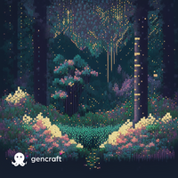

Boas vindas ao Labirinto Inconsciente, criado por uma jovem chamada Rafaela Novaes. Ela era uma pessoa inteligente, criativa e cheia de sonhos, mas também lutava contra os seus próprios demônios internos. Rafaela sofria de transtornos mentais que a atormentavam diariamente, fazendo-a sentir-se presa em um labirinto escuro e desconhecido. Cansada de viver assim, Rafaela decidiu enfrentar seus medos e encontrar uma maneira de superar seus transtornos. Foi então que ela teve uma ideia e, com a ajuda de uma tecnologia obscura, decidiu criar um universo imaginário, um refúgio onde ela pudesse enfrentar seus demônios de forma simbólica e encontrar a cura para suas aflições.
Dentro do Labirinto Inconsciente, Rafaela assume a persona de Pac-Mind, uma habitante de uma cidade chamada "Ignóris", onde as pessoas viviam sem pensar na saúde mental. Pac-Mind sempre sentiu que isso a fazia mal e percebeu que possuía a coragem necessária para enfrentar os seus transtornos, que no Labirinto assumem a forma de fantasmas cujo único objetivo é consumir o que resta da sanidade de nossa protagonista. Pac-Mind era diferente dos demais habitantes de Ignóris. Ela não conseguia aceitar essa conduta de ignorar a saúde mental. Ela sentia que algo estava errado e estava determinado a fazer a diferença. Assim, ela decidiu embarcar em uma jornada por um labirinto misterioso, esperando encontrar respostas para seus questionamentos e ajudar a mudar a mentalidade das pessoas em Ignóris.
Bem-vindos ao nosso incrível espaço! Nós somos um grupo de estudantes da área da comunicação, unidos por uma paixão em comum: a saúde mental. Decidimos unir nossos talentos e criar este ambiente fantástico, onde navegamos por diferentes mídias, para trazer informações essenciais sobre o tema, mas de uma forma descontraída. Acreditamos que a saúde mental é um assunto de extrema importância e que deve ser abordado de maneira acessível a todos. Compreendemos que, muitas vezes, a sobrecarga de informações sérias e complexas pode ser intimidante ou afastar as pessoas. Por isso, optamos por trilhar um caminho diferente, criando uma atmosfera descontraída e amigável, onde todos possam se sentir à vontade para aprender e compartilhar.